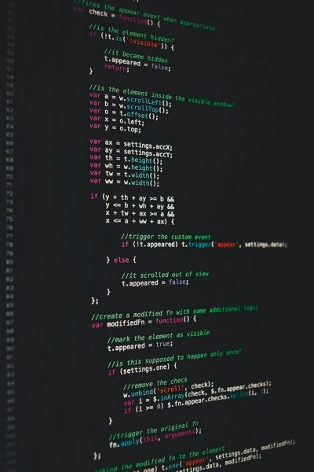

About Me
My name is Jonathan and I sometimes go by Jon. I am from a small town called Cassville in Southwest Missouri. I am the 9th of 10 kids in my family. I love spending time outside with friends and playing volleyball. I also enjoy playing Board Games and Video Games
This is my third semester attending BYU-Idaho and am currently living in Rexburg. I am studying Computer Science with a Minor in Data Science. I love pretty much everything about computers, but currently have the most experience with programming in Python.
